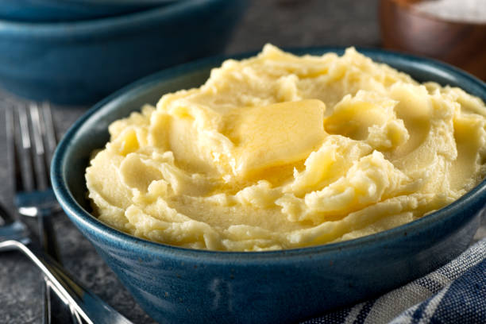

Mashed Potatoes

Ingredients
- 2 lbs potatoes peeled
- Milk
- 8 tablespoons of butter
- Salt and pepper to taste
Steps
- In a large pot of water boil potatoes until soft, about 20 minutes.
- Drain pot into a collander. After draining, put potatoes in large bowl
- Mash the potatoes
- Add a splash of milk, salt and pepper, and 4 tablespoons of butter. Stir until butter is melted into potatoes.
- Taste and add salt and pepper as needed. Continue adding butter to potatoes to melt in.